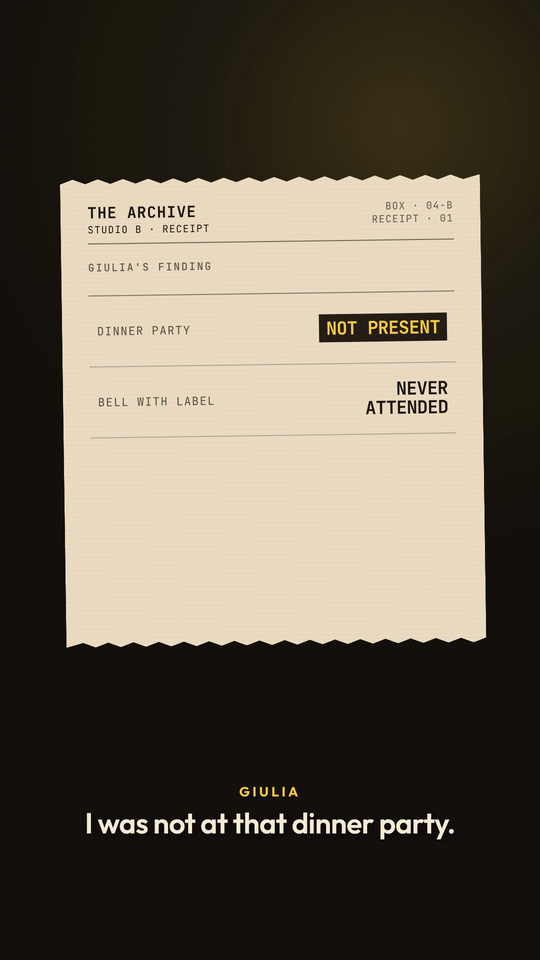
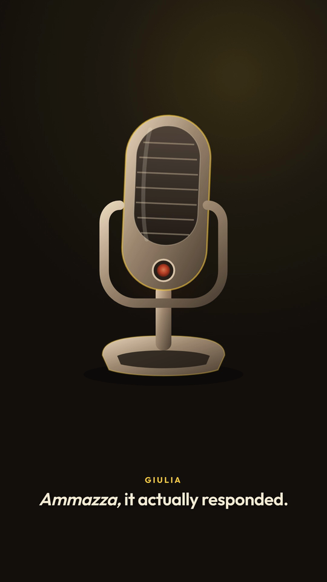
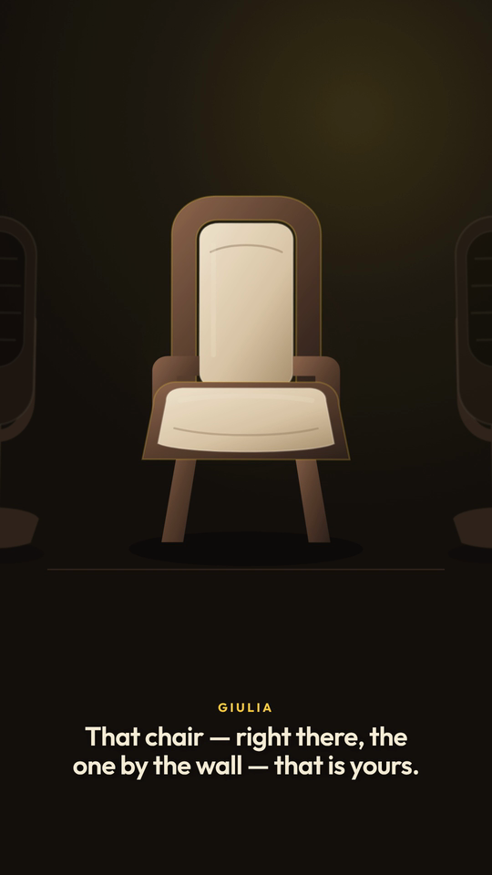

Three short transmissions
When the studio starts talking back.
Marco and Giulia lose an argument to an archive receipt, a jealous microphone, and the third chair.
Contains synthetic voices.

00:26 Transmission 01Archive Receipt
A dinner-party memory meets the paper trail.
Watch film →
00:33 Transmission 02Jealous Microphone
The microphone has been listening. It wants credit.
Watch film →
00:32 Transmission 03Third Chair
Two hosts, two microphones, and a chair waiting for you.
Watch film →